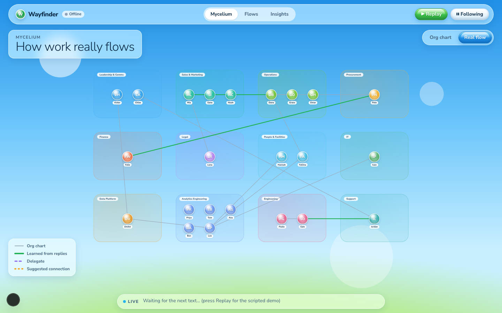
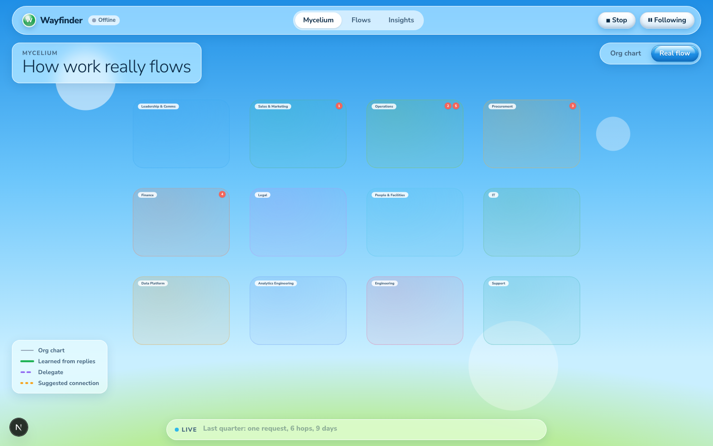
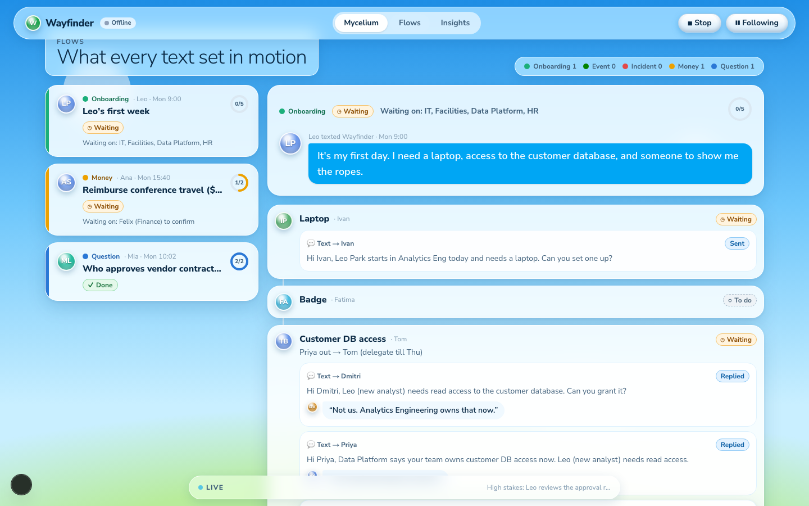
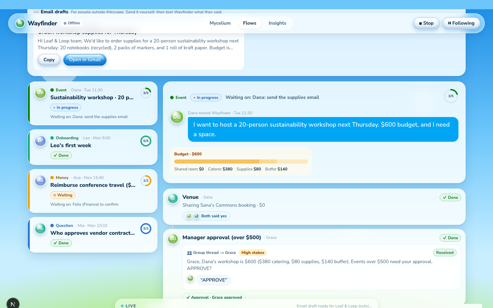
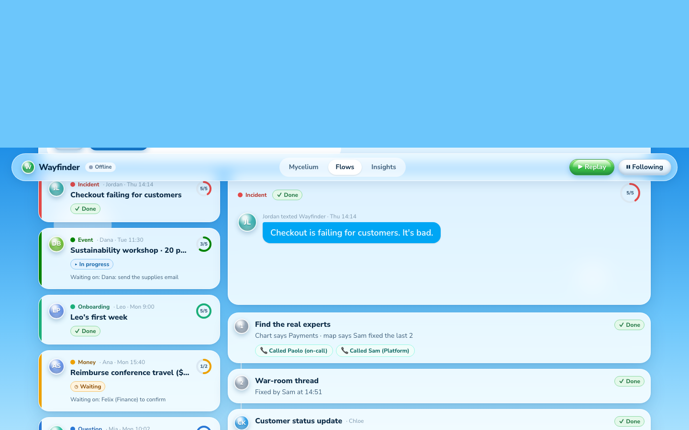
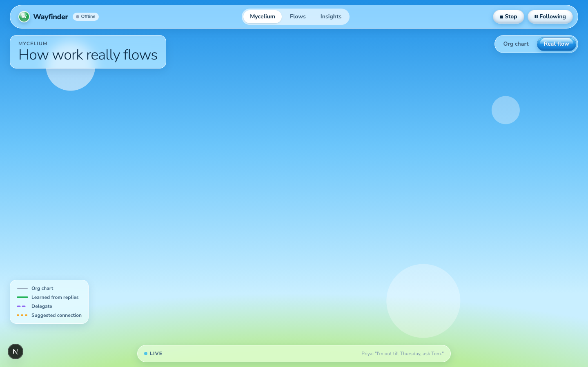

Wayfinder Web: v1 design, as built
- Context
- Principles
- Structure and controls
- Page by page
- Visual system
- Motion and live behaviour
- What's wrong with v1
- Questions for v2
1. Context
v1 is a three-page Next.js site that shows, on a projector, the work iMessage conversations set in motion. It's a record of that work, not a second inbox.
- Product: Wayfinder lives in iMessage. A person's first text starts a goal, and agents route the steps, text the right people and collect replies.
- Who sees the site: judges and the team, watching a laptop on stage while teammates' phones drive the demo. Later, admins who want to see where work stalls.
- Constraints: no logins, no modes, nothing to operate. The only actions are Copy and Open in Gmail on email drafts for people outside iMessage.
- Outreach rule: low-stakes asks go out automatically as texts. High-stakes asks (money, approvals on someone's behalf, outsiders, leadership, first introductions) wait for the requester's "send" in a group thread.
- Data: a mock company (12 departments, 23 people) and a scripted Replay of the three use cases. Live events will arrive over SSE from the agent server once Person A builds it.
2. Principles we designed against
These still seem right. The failure was in how they were turned into pixels.
| Principle | Source | How v1 applied it |
|---|---|---|
| Overview first, details on demand | Shneiderman 1996 | Each page is one overview; clicking a person or line opens a side panel |
| Animate changes, don't redraw | Heer & Robertson 2007 | Rerouted line fades out, new line draws in over ~0.8s |
| Calm periphery, loud center | Weiser & Brown | Routine events go to a bottom ticker; important ones move the screen |
| Always show system status | Nielsen heuristic #1 | Every goal shows a "Waiting on" line |
| One encoding everywhere | Our rule | 5 type colors and 5 status styles mean the same thing on every page, always with a label |
3. Structure and controls
One sticky top bar over three pages, plus a floating ticker at the bottom of every page.
| Element | What it does |
|---|---|
| Logo + "Live/Offline" pill | Shows whether the agent server's event stream is connected |
| Tabs: Mycelium · Flows · Insights | Centered pill navigation, copied from the reference image |
| ▶ Replay / ■ Stop | Plays the scripted demo (~90s). ?replay=1 starts it on load, ?speed=2 doubles speed |
| ⏸ Following | On by default: every event can switch the page, select a goal, pan the graph or scroll to a step |
| Live ticker (bottom) | Latest event in bold if important, the previous one faded to the right |
Data flow: agent server (or Replay script) → LiveUpdate events → one reducer in lib/live.tsx → all three pages. The event decides where the screen goes via a focus field.
4. Page by page
Mycelium /mycelium
A full-page graph: 12 department boxes in a 4×3 grid, 23 people as glossy initial bubbles, lines for who handles what.
- Top: frosted title card ("How work really flows") left, Org chart / Real flow toggle right.
- Lines: grey = org chart, green = learned from replies, purple dashed = delegate, amber dotted = suggested connection with consent dots.
- Live moments: the opening bounce chain numbers each department it hits (1–6). A reroute fades the old line and draws the new one. A delegate turns name pills purple ("Priya · out till Thu", "Tom · covering").
- Details: click a person for a side panel; click a line for confidence and what it was learned from.


Flows /flows
Two columns of cards under a title card and a row of type counts.
- Drafts strip (only when an email draft exists): recipient, subject, preview, Copy and Open in Gmail.
- Left: one card per goal, newest activity first, with a colored left edge, avatar, type, title, stage chip, "Waiting on" and a progress ring.
- Right: the selected goal. A header card with the first text as a blue bubble, budget bar and receipt. Then one card per step with owner, status chip, note, outreach cards (channel, high-stakes badge, draft, status, quoted reply) and chips for money, approvals, calls, receipts, connections.


Insights /insights
A conventional KPI dashboard: four tiles (hours saved with a sparkline, average hops, goals in flight, slowest handoff), a hero card with Leo vs. the last 10 hires as two bars, then ranked slowest handoffs and a goals-by-type donut.

5. Visual system
Surfaces and type
- Background: fixed sky gradient (#1f8fe6 → #6cc6fb → #c9efff) with a green glow at the bottom and four large translucent "bubble" circles.
- Cards: 86% white, 22px radius, blur, soft blue shadow. Frosted 55% white for title cards, top bar and ticker.
- Buttons: "gloss" pills with a gradient base, a white highlight on the top half and inset + outset shadows. Blue, green and white variants.
- Avatars: glossy spheres tinted by department, white initials.
- Type: Nunito Sans; light 36px page titles, 800-weight card titles, 12–14px body.
Goal-type colors
Swapped from the original picks after a colorblind check failed (teal and green were too close). Red/green still sit in the warning band, so a label always accompanies the color.
| Type | Fill | Text ink |
|---|---|---|
| Onboarding | #1baf7a | #0b6b4a |
| Event | #008300 | #006400 |
| Incident | #e34948 | #b42318 |
| Money | #eda100 | #8a5300 |
| Question | #2a78d6 | #1d5fae |
Status styles
Planning (grey, dashed), Waiting (amber), In progress (blue), Done (green), Blocked (red). Each is a pill with an icon and a label. Outreach adds Drafted, Awaiting approval, Sent, Replied, Resolved, Off-channel.
Graph lines
Org chart grey #9aaabb 2px · learned green #22b357 4px · delegate violet #8a5cf0 dashed · suggested amber #f5a524 dotted, pulsing · hop coral #f2665c 5px.
6. Motion and live behaviour
| Event | What moves |
|---|---|
| Anything changes | Affected card or step gets a blue ring pulse (×2); ticker slides in the new line |
| Edge rerouted | Old line fades 0.4s, then new line draws in 0.6s; camera pans to the people involved |
| Person involved | Bubble pops (scale 1.25) twice |
| Suggested connection | Dotted amber line pulses until both consent, then turns solid green |
| Goal updated | Goal card springs to the top of the list; page scrolls the changed step to center |
| Planning | Shimmering skeleton bars instead of steps |
7. What's wrong with v1
My read of why it doesn't work, most serious first.
- It's a dashboard wearing an Aero skin. The layout is generic SaaS (cards, chips, KPI tiles); the Aero part is only a gradient, some gloss pills and circles. It's not committed to a look, so it reads as neither modern nor nostalgic.
- No focal point on a big screen. Every page has equal-weight cards and many small labels. From the back of a room, nothing tells you where to look; the live change is a small ring pulse among dozens of elements.
- Flows is a wall of text, not a visualization. Cards nested three deep (step → outreach → reply), repeated drafts, chips everywhere. It shows the data instead of the shape of the work (who handed off to whom, where it waited).
- The graph is a grid, not a network. 12 boxes in rows with long straight lines crossing everything. It looks like a seating chart. Mycelium was supposed to feel organic and alive.
- Small, low-contrast text. 11px name pills, 12px chips, hop labels you can't read at all. Fails the projector test.
- Decoration competes with content. Background bubbles sit behind cards and show through title cards; translucent department boxes muddy the lines.
- Insights is the least considered page. Four tiles + bars + donut is the default template. The one number that matters (3 hours vs 4 days) is drawn as a sliver.
- Emoji as icons (💬 👥 ✉️ 📞 💵 🧾) look cheap next to the glossy chrome.
- Auto-follow can land on a blank graph. In headless captures the graph was sometimes empty right after a page switch; needs checking in a real browser.

8. Questions for v2
- What do you hate most? The look (colors, gloss, type), the layout (cards, grid), or the concept of each page? Each points to a different fix.
- Keep Frutiger Aero, or drop it? Options: commit fully (one strong art-directed scene, not chips), go modern/minimal with only an Aero accent, or something else entirely.
- One screen or three pages? A single stage view (graph + current flow + one big number) may read better on a projector than tabs.
- How should a flow be drawn? A horizontal timeline of hops (like a delivery tracker), a swimlane by person, or a path drawn on the graph itself?
- Organic network or structured map? Force-directed people clustered by department, or departments as fixed regions?
- References: any sites, Dribbble shots or CodePens you like? The one reference image so far was a fintech dashboard, which may have pulled v1 toward the template look.